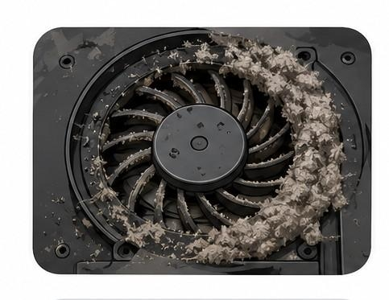
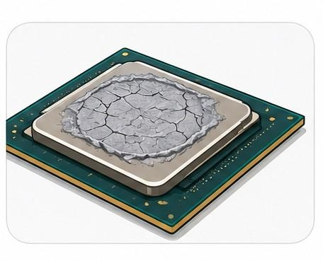
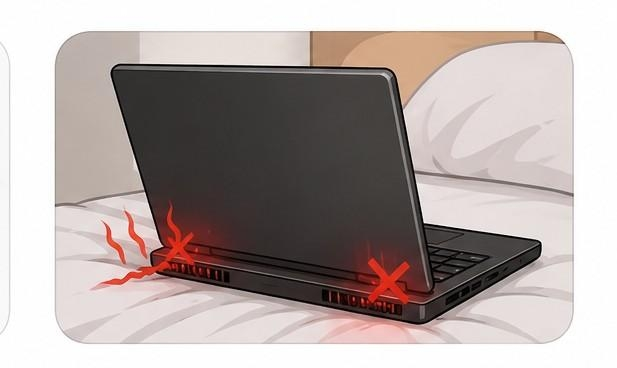
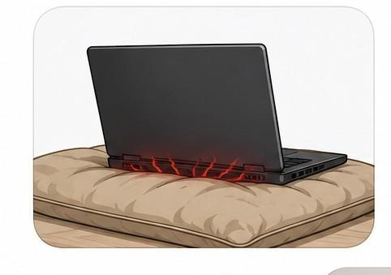
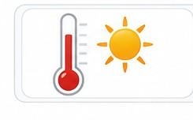
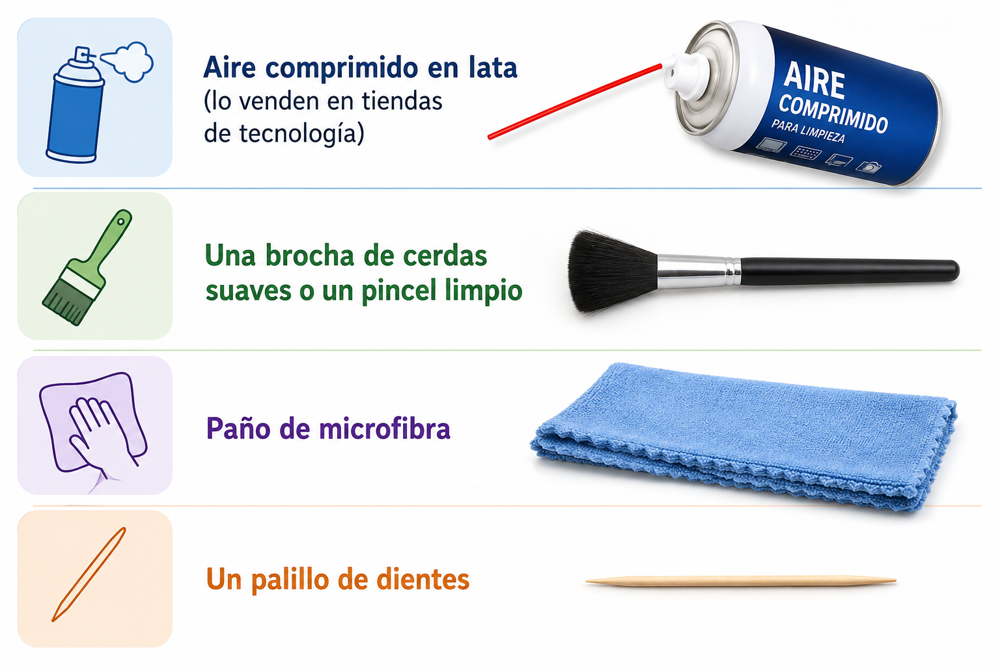
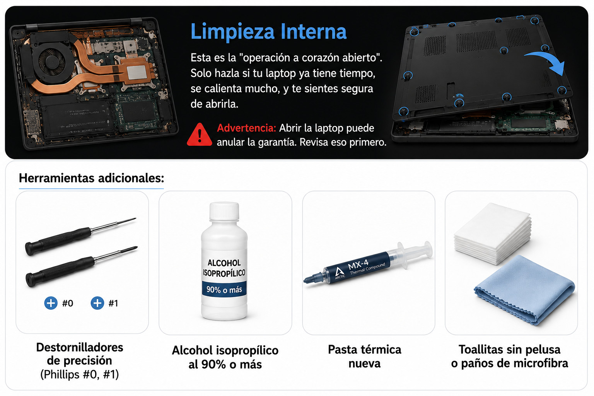
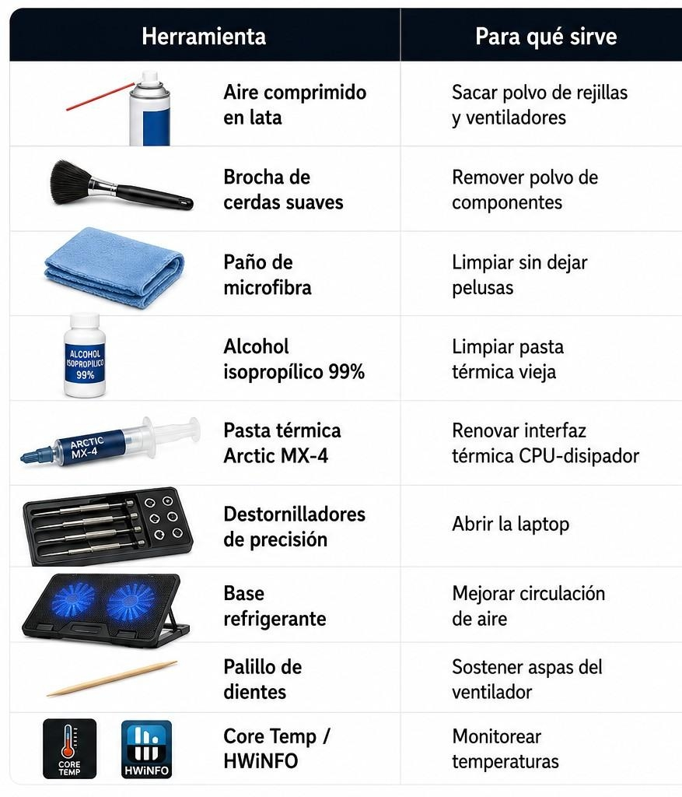

ARTÍCULO TÉCNICO
Limpieza física y prevención del thermal throttling
Introducción
La pasta térmica es el material que conecta el procesador con el disipador de calor. Con el tiempo (2-4 años) se seca o degrada, creando "puntos calientes". Reemplazarla puede bajar las temperaturas entre 5-20°C.

Ventilación Bloqueada
Usar la laptop en la cama, almohadas o mantas tapa las rejillas de ventilación. Incluso en una mesa, si la laptop está muy plana, el aire no circula bien debajo.



VA Un palillo de dientes a
Herramienta
Para qué sirve



